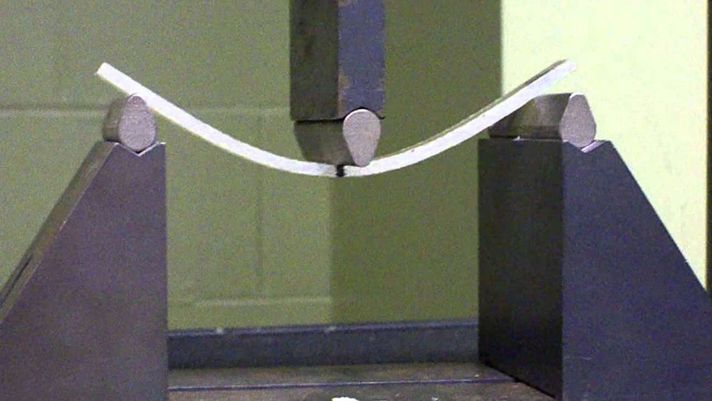

Contrainte, déformation et module
Le cours compare des matériaux par leur module (0,001 à 3 GPa pour un polymère, 200 GPa pour une céramique), lit des courbes de traction et calcule des masses volumiques de mélanges. Ces outils ne sont pas rappelés dans les diapositives : les voici, sur l'exemple d'une tige de prothèse de hanche.
Une éprouvette de section initiale \(S_0\) et de longueur utile \(l_0\) est tirée par une force \(F\) ; elle s'allonge de \(\Delta l\).
- Contrainte : \(\sigma = \dfrac{F}{S_0}\). Avec \(F\) en N et \(S_0\) en mm², \(\sigma\) est en MPa (1 MPa = 1 N/mm² = \(10^6\) Pa).
- Déformation : \(\varepsilon = \dfrac{\Delta l}{l_0}\), sans unité (souvent en %).
- Module d'Young : dans le domaine élastique, \(\sigma\) est proportionnelle à \(\varepsilon\) (droite de Hooke) : \(\sigma = E\,\varepsilon\). \(E\) est la rigidité du matériau, en MPa ou GPa.
Pour un matériau isotrope (alliages métalliques, céramiques, polymères), il suffit de deux constantes élastiques indépendantes parmi le module d'Young \(E\), le coefficient de Poisson \(\nu\) et le module de cisaillement \(G\), reliées par \(G = \dfrac{E}{2(1+\nu)}\). Un composite n'est pas isotrope : il en faut davantage (chapitre 11).

Exemple de calcul
Exemple ajouté, avec les valeurs du Ti-6Al-4V du tableau du cours (4,43 g/cm³, 110 GPa, 1 171 MPa). Une éprouvette de longueur utile \(l_0 = 50\) mm et de section \(S_0 = 20\) mm² est tirée par \(F = 4\,400\) N ; elle s'allonge de \(\Delta l = 0{,}1\) mm.
- \(\sigma = 4\,400 / 20 = 220\) MPa et \(\varepsilon = 0{,}1/50 = 0{,}002\), donc \(E = 220 / 0{,}002 = 110\,000\) MPa = 110 GPa.
- Force maximale avec une résistance de 1 171 MPa : \(F = \sigma S_0 = 1\,171 \times 20 = 23\,420\) N.
- Volume utile \(50 \times 20 = 1\,000\) mm³ = 1 cm³, donc masse \(m = 4{,}43\) g.
- Avec \(\nu = 0{,}34\) (valeur ajoutée), \(G = 110 / (2 \times 1{,}34) \approx 41\) GPa.
À retenir
\[\sigma = \frac{F}{S_0} \qquad \varepsilon = \frac{\Delta l}{l_0} \qquad \sigma = E\,\varepsilon \qquad G = \frac{E}{2(1+\nu)}\]
1 MPa = 1 N/mm² = \(10^6\) Pa ; \(\varepsilon\) sans unité (souvent en %).